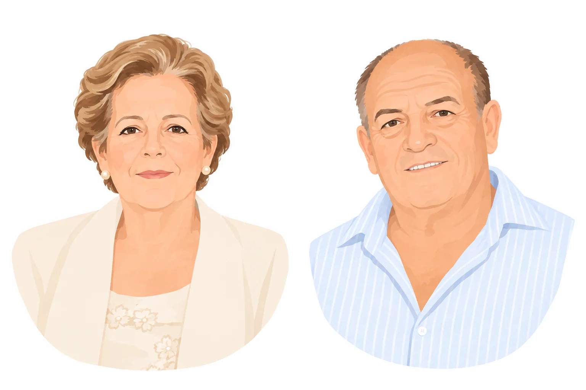
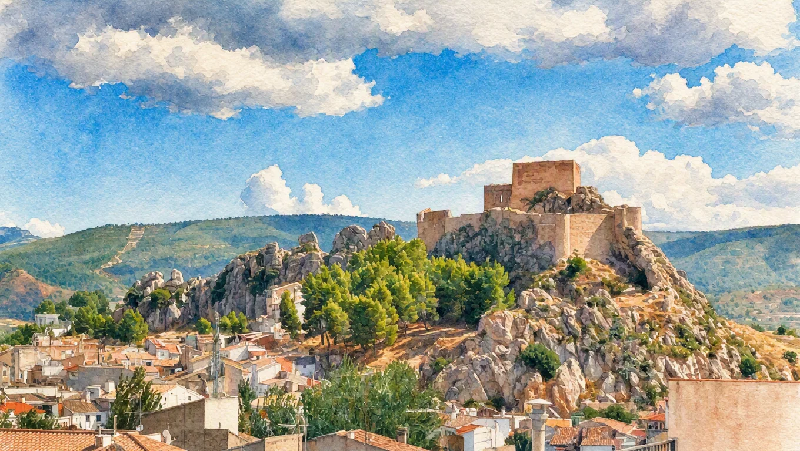

Bebepunt nace de una historia familiar ligada al mundo del punto desde 1967.
Ese año, Amparo Cámara Juan, con el apoyo de su marido, José María Aparicio Rodenas, fundó Creaciones Cámara, una empresa familiar que comenzó su trayectoria dedicándose a la fabricación de prendas de punto para bebé.
Con el paso de los años, las necesidades del mercado llevaron a la empresa a especializarse en la confección de prendas para un público adulto.
Sin embargo, en 2020 surgió la oportunidad de volver a los orígenes y recuperar aquella primera vocación por la moda infantil. Así nació Bebepunt, una nueva etapa para una familia que volvía a poner en el centro aquello con lo que todo comenzó: el mundo del bebé.
Hoy, Bebepunt es una empresa joven en la que conviven la segunda y tercera generación de la familia, uniendo la experiencia adquirida durante décadas con una visión renovada y actual.

HECHO EN AYORA
Nuestra forma de entender la producción parte de una idea muy clara: cuidar cada prenda desde el primer momento hasta el último detalle.
En nuestras instalaciones de Ayora (Valencia) desarrollamos nuestros productos combinando el saber hacer artesanal con la tecnología y la maquinaria más avanzada. Diseñamos, fabricamos y confeccionamos el 100% de nuestras prendas buscando siempre un equilibrio entre tradición, innovación y calidad.
Además, contamos con nuestro propio taller de confección, lo que nos permite integrar diferentes procesos productivos y trabajar tanto prendas de tejido como prendas que combinan tejido y punto. De esta manera, podemos ofrecer a nuestros clientes una mayor variedad y un servicio más completo, manteniendo nuestra producción en Ayora.

UNA EMPRESA CON RAÍCES
Más de cinco décadas de trayectoria nos han enseñado que una empresa no se construye únicamente con máquinas, tejidos y prendas. Se construye, sobre todo, con personas.
Desde sus orígenes, Creaciones Cámara ha entendido a sus trabajadores como parte fundamental de esta historia. Ese compromiso con las personas se mantiene hoy en Bebepunt y se extiende también a nuestro entorno.
Porque nuestras raíces están en Ayora, y crecer junto a nuestro pueblo forma parte de nuestra manera de entender la empresa.